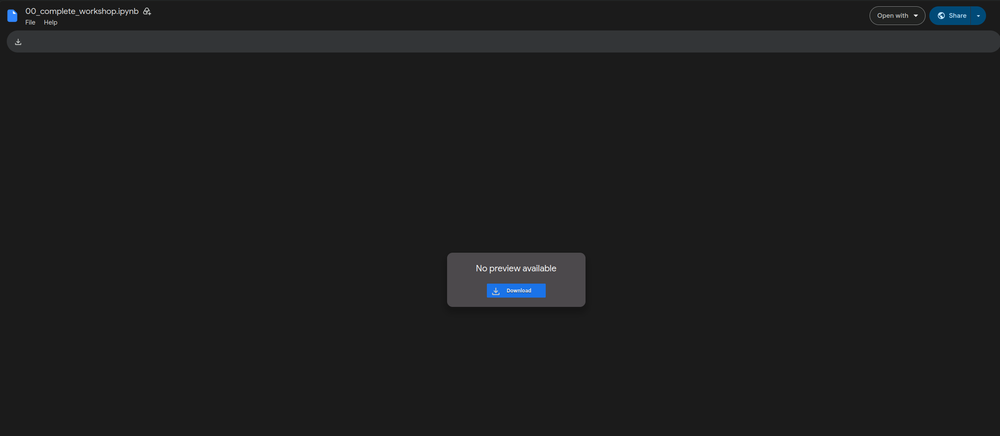
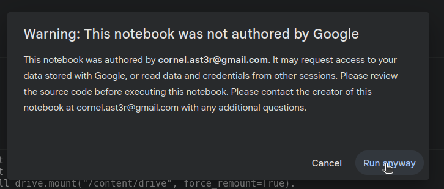
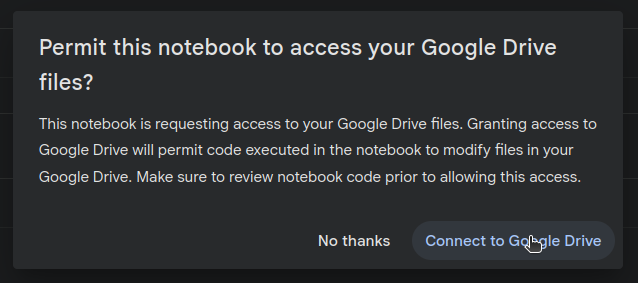
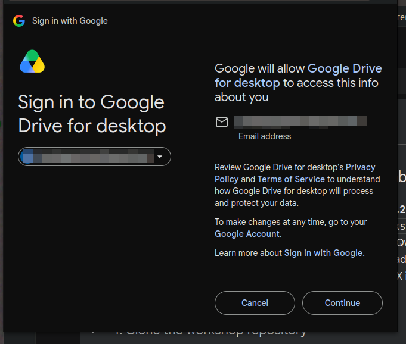

Workshop Access
Latent Vandalism: The Joy of Productive Damage to Text-to-Image Synthesis Pipelines
Welcome! This page has everything you need to open the workshop notebook before we start. It only takes a minute — open the notebook below, and tomorrow we'll go through the permission prompts together.
Before the workshop
1. Open the notebook
Click the button below to open the workshop notebook directly in Google Colab.
It didn't open in Colab?
If you land on a plain Google Drive preview screen instead (like the one below) with no "Open with Colaboratory" option, your Google account doesn't have the Colab app connected to Drive yet. Open the file's "Open with" menu, choose "Connect more apps", search for Colaboratory, and install it. Then reopen the notebook link above.

Tomorrow, in the workshop
2. We'll grant permissions together
Once we start running the notebook, Google will show you a few permission prompts. Grant all of them — the notebook needs Drive access to load the shared models and save your own work. We'll walk through this together, step by step.
This warning always shows up for notebooks shared outside Google's own gallery — it's expected. Click Run anyway.

Click Connect to Google Drive. This is needed to mount your Drive, link the shared model folder, and save your own embeddings.

Pick your Google account, review the requested permissions, and check/allow all of them, then click Continue.
